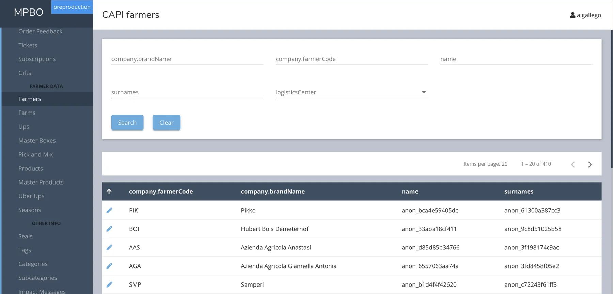
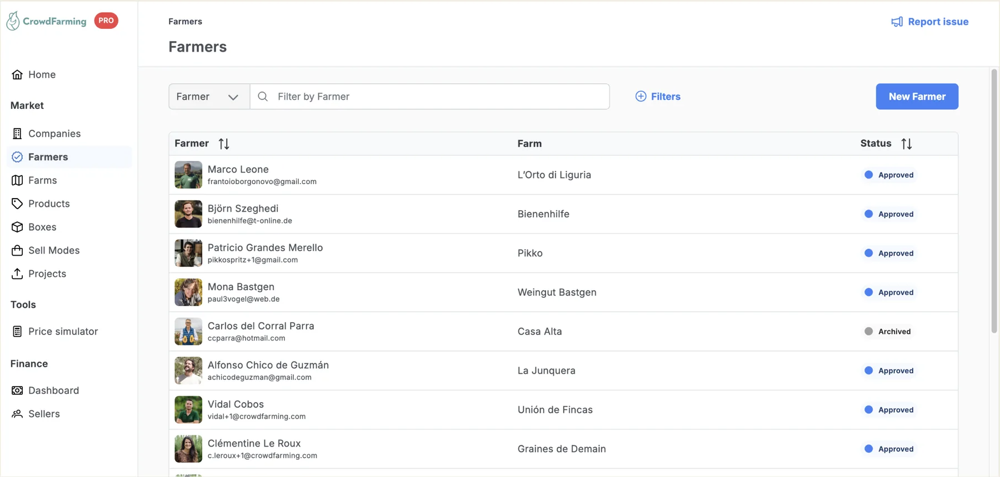
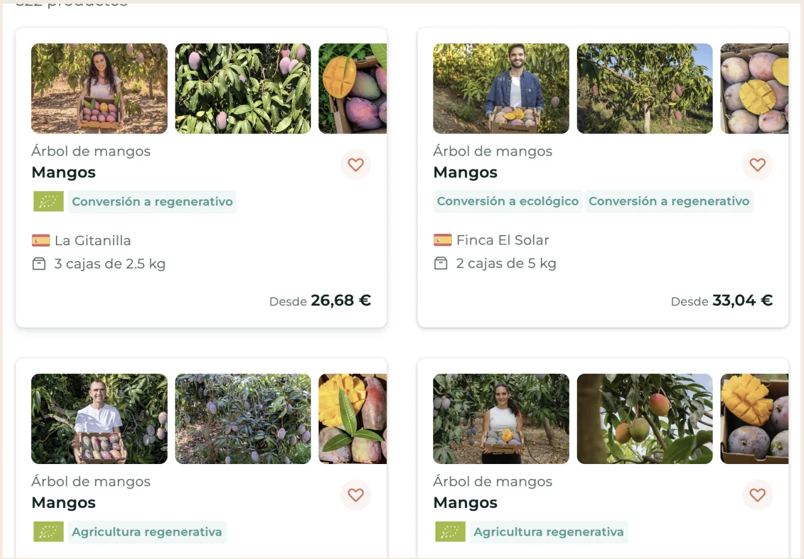
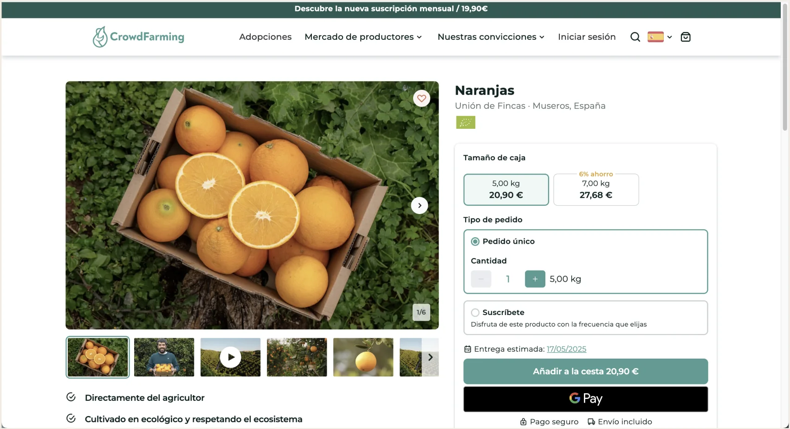
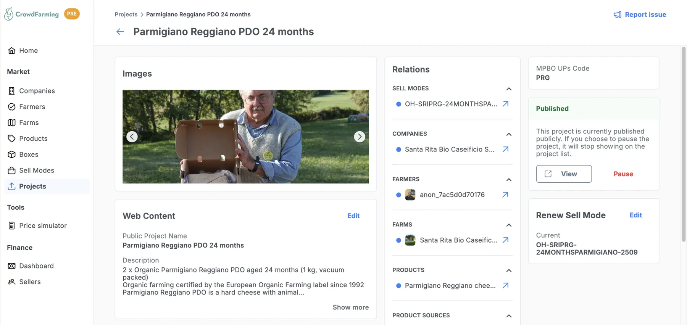
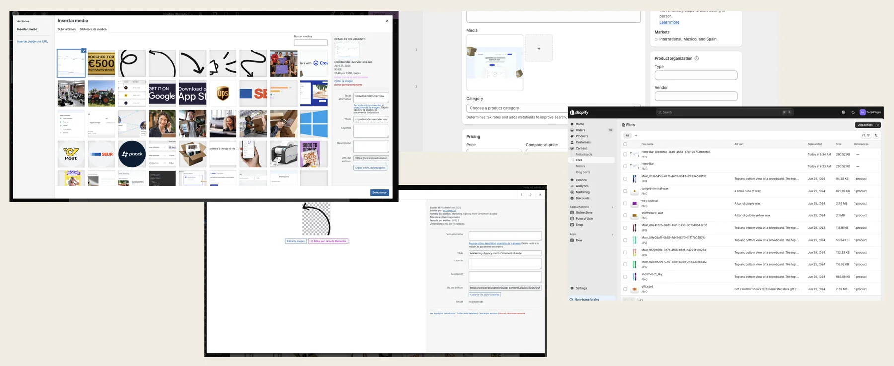
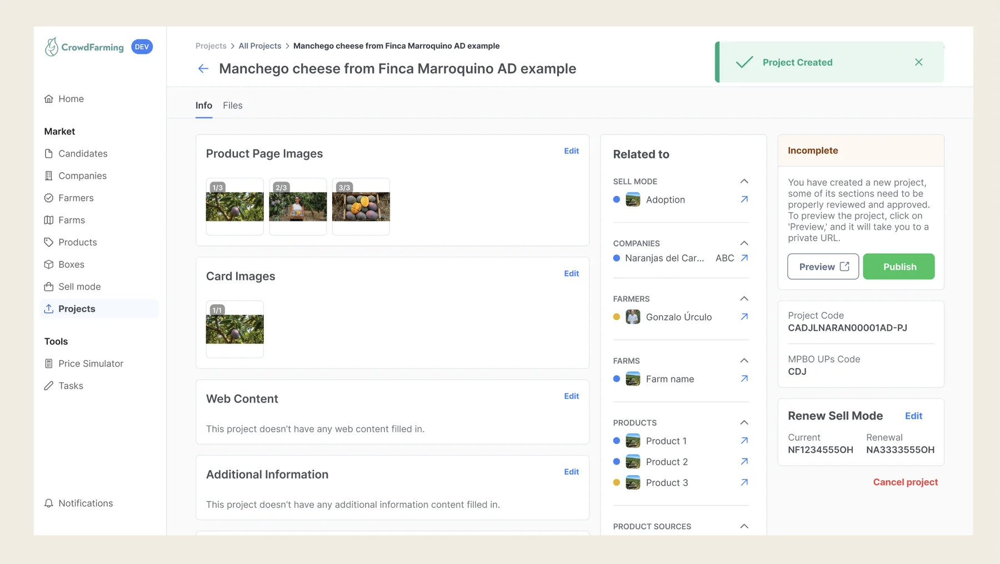
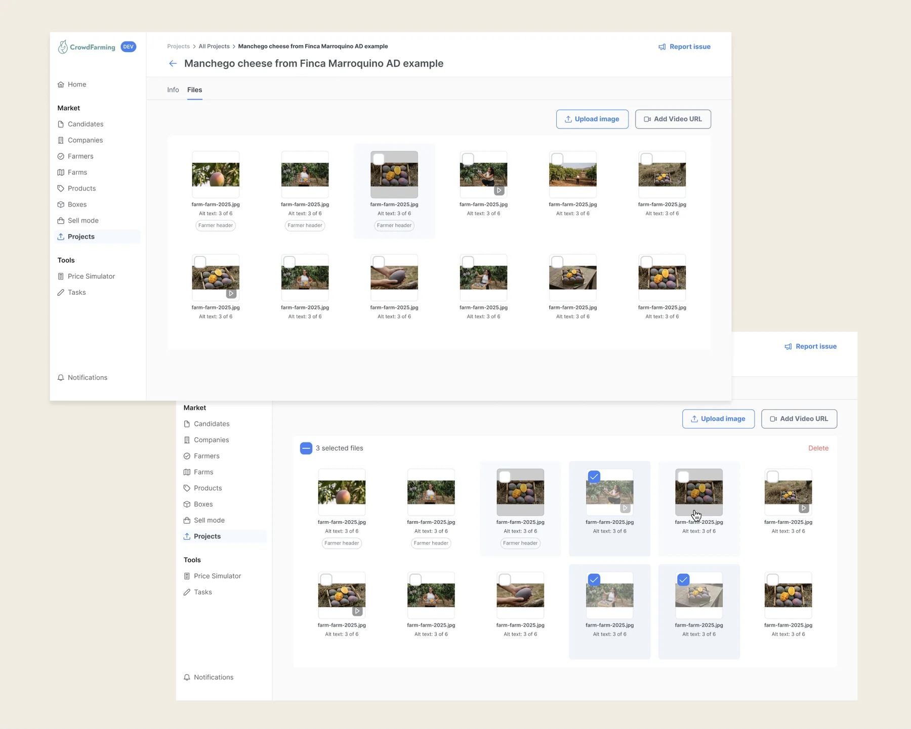
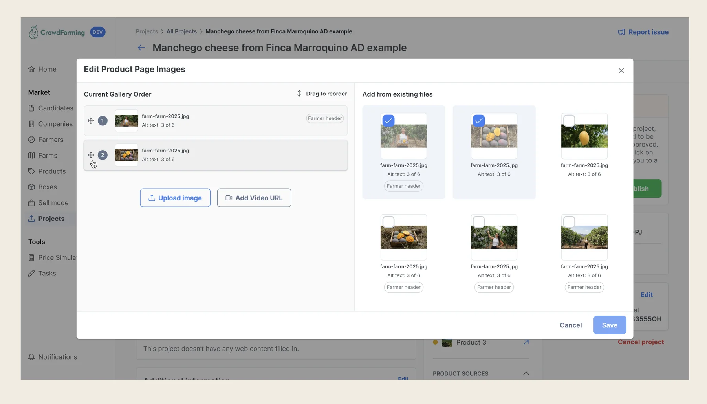

A central hub for project images
A single place to manage the images of every project in CrowdFarming’s new back office.

Context
CrowdFarming is a platform that connects consumers directly with farmers, where users can “adopt” a tree or a crop unit, order single boxes or create a subscription.
FRP is CrowdFarming’s new back office, an ongoing project that involves a lot of migration work and legacy code.


The challenge
The CrowdFarming web team is constantly iterating on how images are displayed. For example, they test putting several photos inside a single card or adding YouTube videos to the product page.


Starting point
My first step was to deeply understand the problem and the existing scenario I had to work with. In FRP, a “Project” is an aggregation of other entities such as Farmers, Farms and Products. Many of these entities have their own images, and each image requires alt text in 7 different languages, which added complexity.


Research
I interviewed several users from our back office team to better understand their needs and identify new opportunities.
These were the main insights:
- Being able to see all the project’s images in one place
- Being able to add and remove images
- Being able to reorder images
- Being able to tell card images from product page images

With these insights in mind, I ran a benchmark. I analysed how products with complex image galleries, such as Shopify, WordPress and Squarespace, solve similar problems.
Ideation
With the research insights in mind, I moved on to the ideation phase.
My first proposal was to design a standalone card that let users upload several images at once and reorder them easily.

Constraints and discoveries
The solution
A single place for all the project’s images

- Now, when creating a project, the system automatically finds and shows all the related images.
- This provides immediate visibility and creates a single source of truth for all the project’s visuals.
The “Files” tab: key features

- We introduced a “Files” tab where users can upload new photos and delete them.
- It was important to differentiate this master library from the images selected in the “Info” tab, which represent the project’s final selection.
Editing PDP/CARD images and their order

I designed a two-panel modal to make editing intuitive. On the right, users see their full library of available images. On the left, they build their selected gallery by adding images from the library and then simply dragging to reorder or remove them.
The upload and preparation flow

Enriching the content with video

We also added the option to embed YouTube and Vimeo videos, with their own multilingual alt text.